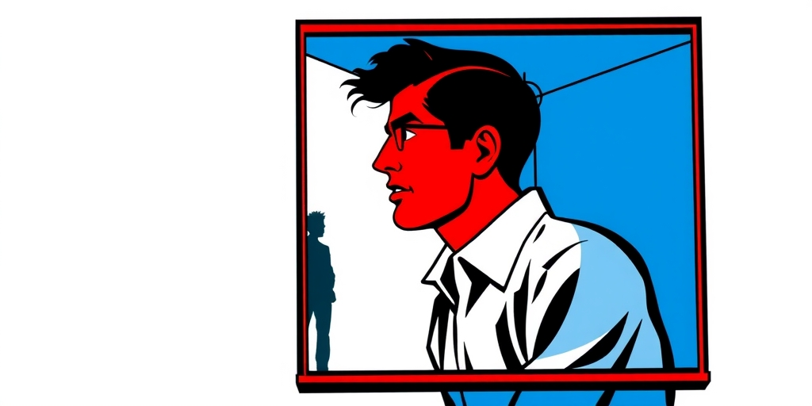
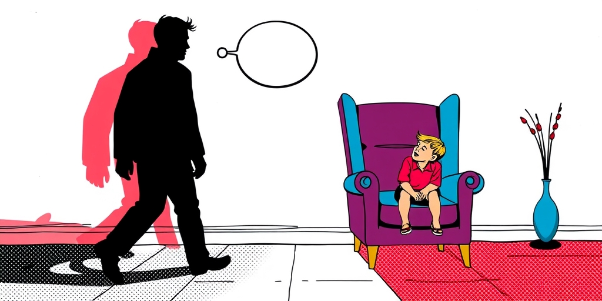
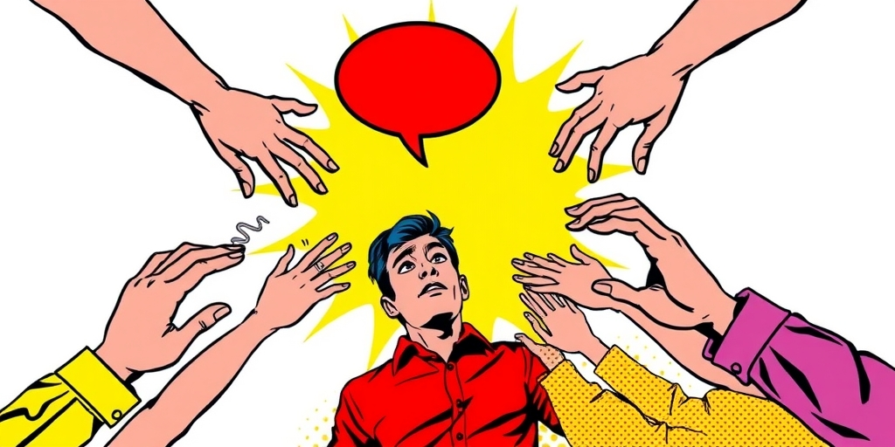
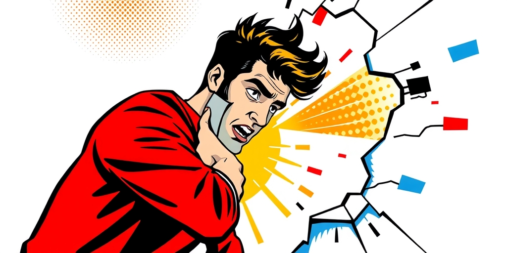

小汪老师的成长洞察 · 属于你的成长专栏
我们错把童年被迫长出的铠甲，当成了成年后值得炫耀的徽章。那些从小没学会依赖的人，不是在享受独立，而是在恐惧依赖。

朋友的公司里有个高管，三十多岁，业务能力极强。一次出差途中她接到保姆电话，说她三岁的儿子发烧了。她冷静地远程安排了一切，挂掉电话后继续谈项目。旁边同事感叹，真独立啊，什么事都能自己搞定。
她看着窗外说，不是的，我只是不知道还能打给谁。
这句话让整个车厢安静下来。我们从小被教育要独立，自己的事自己做，不要麻烦别人。摔倒了自己爬起来，考砸了自己消化，失恋了别哭哭啼啼。这些训导听起来天经地义。但一个三岁的孩子摔倒时，他需要的不是“自己站起来”的口号，需要的是一个可以扑进去哭泣的怀抱。当这个怀抱长期缺席，孩子学会的不是坚强，是放弃求助。

心理学研究发现，童年时期被迫过早独立的人，成年后会发展出一种特殊的防御机制。他们混淆了求助与示弱，把任何形式的依赖都等同于暴露弱点。这不是真正的自给自足，是一种被训练出来的生存策略。
你能在他们身上看到一种奇怪的矛盾。工作上他们可能是最拼的，生病了也要扛着，加班从不吭声。感情里他们很难开口说“我需要你”，哪怕心里渴望得要命。朋友聚会时他们永远在照顾别人，轮到自己时却笑着转移话题。
他们不是不需要帮助。他们是被过去的经验教会了一个错误的等式：开口等于被拒绝，依赖等于被抛弃，袒露脆弱等于不被爱。于是他们先下手为强，自己把门关上了。

这类人慢慢建起一种生活，一种别人不知道该怎么走进来的生活。外人看着羡慕，觉得这个人很强，什么都能自己扛。只有他们自己知道，这不是选择的结果，是别无选择后的习惯。
最残酷的部分在这里。他们不是不想让别人进来，是已经不知道怎么开门了。多年不用的语言会退化，多年不用的依赖能力也会退化。当某一天他们真的想要依靠一个人时，突然发现自己不会了。不知道该怎么表达需要，不知道怎么接受别人的好意，甚至会因为别人的关心而感到不安。
他们不是冷漠，是笨拙。这种笨拙被旁人误解为疏离，又反过来印证了他们心底那个最深的恐惧——看吧，果然没人会真的靠近我。自我实现的预言就这样完成了闭环。
社会赞美独立，把不麻烦别人当作美德。我们夸一个人懂事，夸一个人让人省心，却没想过这些夸奖背后藏着怎样的代价。一个让所有人省心的人，往往是最不让自己省心的人。
那些把独立活成牢笼的人，通常有一个共同点：他们的童年里缺乏无条件的被接纳。可能父母太忙，可能家庭变故，可能他们过早地承担了照顾他人的角色。于是他们学会了用懂事换爱，用不惹麻烦换安全，用独立换不失望。
但这种交易到了成年后开始反噬。职场上不敢授权，感情里不敢索取，友谊里不敢求助。他们把人生过成了一座自给自足的孤岛，然后安慰自己说这是自由。可真正的自由包括敢于依赖，包括相信有人会在你需要时接住你。

重新学会依赖，比学会独立难得多。独立是一堵墙，你一块砖一块砖地往上垒，越垒越安全。依赖是拆墙的过程，你不能确定墙外面是拥抱还是拳头。
有些人一辈子都困在这座堡垒里。他们以为自己在保护自己，实际上是在囚禁自己。他们变成了别人眼中可靠的朋友、优秀的员工、孝顺的子女，但没有一个人真正了解他们内心的样子。
打破这个循环，不是要求自己一夜之间变成粘人的性格，是承认那个等式从一开始就错了。求助不等于软弱，依赖不等于被抛弃。真正不再依赖任何人，不是你一个人撑下所有，而是你敢让某些事情依赖别人，但同时知道自己一个人也能活。这两种能力并不矛盾，它们该长在同一个人身上。
写给你的话
你是不是也认识这样一个人——或者是不是你自己——那个永远在照顾别人情绪、但从不让别人照顾自己的人。你问 TA 最近好吗，TA 永远说还好。下次再见到 TA，别问还好吗，问一句：有什么事是你一个人扛了很久的。看看对方会沉默多久。那个沉默的长度，就是堡垒的厚度。
参考资料
[1] Psychology says adults who learned to depend on no one as children don't grow into self-sufficient adults; they grow into people who confuse asking for help with weakness, and slowly build a life no one else knows how to step into (The Economic Times) https://economictimes.indiatimes.com/news/international/us/psychology-says-adults-who-learned-to-depend-on-no-one-as-children-dont-grow-into-self-sufficient-adults-they-grow-into-people-who-confuse-asking-for-help-with-weakness-and-slowly-build-a-life-no-one-else-knows-how-to-step-int/articleshow/131584751.cms
[2] Psychology says most people only pretend to care about your life and are just looking for juicy gossip: Why bad news is more interesting for them (The Economic Times) https://economictimes.indiatimes.com/news/international/us/psychology-says-most-people-only-pretend-to-care-about-your-life-and-are-just-looking-for-juicy-gossip-why-bad-news-is-more-interesting-for-them/articleshow/131515692.cms
小汪老师的成长洞察 · 属于你的成长专栏